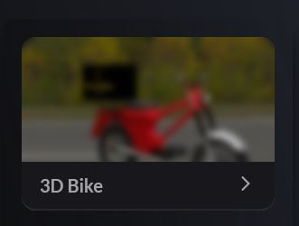
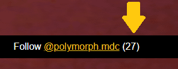
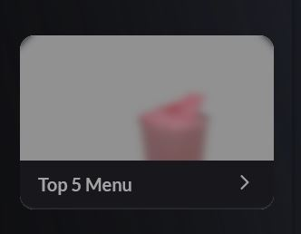

3D Bike
-
Pada halaman utama, klik tombol
3D Bike untuk menampilkan konten AR Motor Kopi Polymorph.

- Arahkan kamera pada kartu yang memiliki logo Polymorph
- Usapkan jari pada layar ke kiri atau kanan untuk memutar arah konten AR Motor Kopi Polymorph
- Proses deteksi kartu dapat dilakukan selama 30 detik, jika waktu habis silahkan refresh halaman untuk melakukan deteksi. Tapi jika konten AR sudah muncul dan waktu habis, anda masih bisa berinteraksi dengan konten AR Motor Kopi Polymorph 

Top 5 Menu
-
Pada halaman utama, klik tombol
Top 5 Menu untuk menampilkan konten AR Top 5 Menu.

- Arahkan kamera pada kartu yang bertuliskan Top 5 Menu
- Usapkan jari pada layar ke kiri atau kanan untuk melihat lima varian menu yang paling disukai pada Motor Kopi Polymorph dalam bentuk konten AR
- Proses deteksi kartu dapat dilakukan selama 30 detik, jika waktu habis silahkan refresh halaman untuk melakukan deteksi. Tapi jika konten AR sudah muncul dan waktu habis, anda masih bisa berinteraksi dengan konten AR Motor Kopi Polymorph